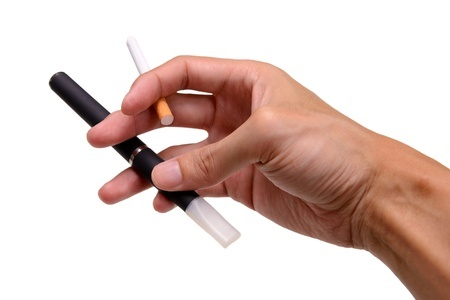

El Departamento de Salud del Reino Unido encuentra que los e-cigsvapes son un 95 por
ciento
menos dañinos que
los cigarrillos normales
Pese a que los científicos siguen divididos respecto al tema, un nuevo informe de Salud Pública de
Inglaterra (PHE) - una división del Departamento de Salud del Reino Unido - ha llegado a la conclusión
de que los cigarrillos electrónicos son mucho menos dañinos que sus contrapartes análogas. ¿Cuánto
menos? Bueno, de acuerdo con estimaciones oficiales, se halla en alrededor de un 95 por ciento.
"En pocas palabras, las mejores estimaciones demuestran que los cigarrillos electrónicos son un 95 por
ciento menos perjudiciales para su salud que los cigarrillos normales," de acuerdo al informe, "y cuando
se apoya en un servicio para dejar de fumar, ayuda a la mayoría de los fumadores a dejar el tabaco por
completo."
Uno de los autores independientes del estudio, el profesor Peter Hajek, de la Universidad de Queen Mary
en Londres, ha añadido: "Mi lectura de la evidencia es que los fumadores que se cambian al vapeo
eliminan casi todos los riesgos que supone fumar para su salud."
Sin embargo, pese a estos resultados, la investigación también sugiere que las personas generalmente
desconocen que los cigarrillos electrónicos son mejores que los normales. El estudio continúa con la
demostración de los conceptos erróneos comunes en relación a los efectos sobre la salud que tienen los
cigarrillos electrónicos, cuestión que ha desalentado en gran medida a los fumadores tradicionales a
hacer el cambio - a pesar del hecho de que el hacerlo podría mejorar drásticamente su salud. Casi la
mitad de la población de Inglaterra (44,8 por ciento, para ser exactos) no se percata que los
e-cigarrillos son menos dañinos que el fumar.
"El problema es que la gente piensa cada vez más que son por igual perjudiciales y esto puede impedir a
millones de fumadores para que dejen de fumar", dijo el profesor Kevin Fenton, director de salud y
bienestar en el PHE, en un comunicado, agregando que "los servicios para dejar de fumar locales deberían
apoyar a los usuarios de e-cigarrillos en su camino para dejar de fumar por completo".
Se estima que alrededor de 80.000 personas en Inglaterra mueren cada año debido a los problemas de salud
relacionados con el tabaquismo, pero si todos estos fumadores se cambiaran a los cigarrillos
electrónicos, los investigadores estiman que esta cifra podría reducirse a apenas 4.000. Como co-autor
del estudio la profesora Ann McNeill dice: "Los e-cigarrillos podrían ser un elemento de cambio en la
salud pública."
